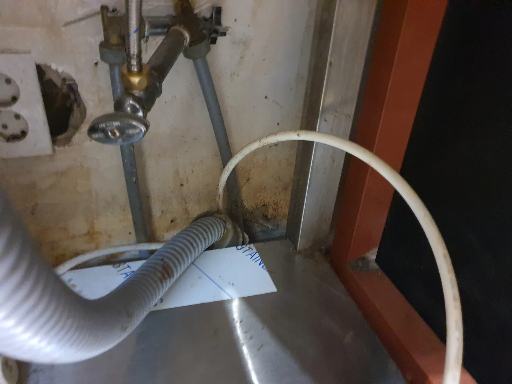
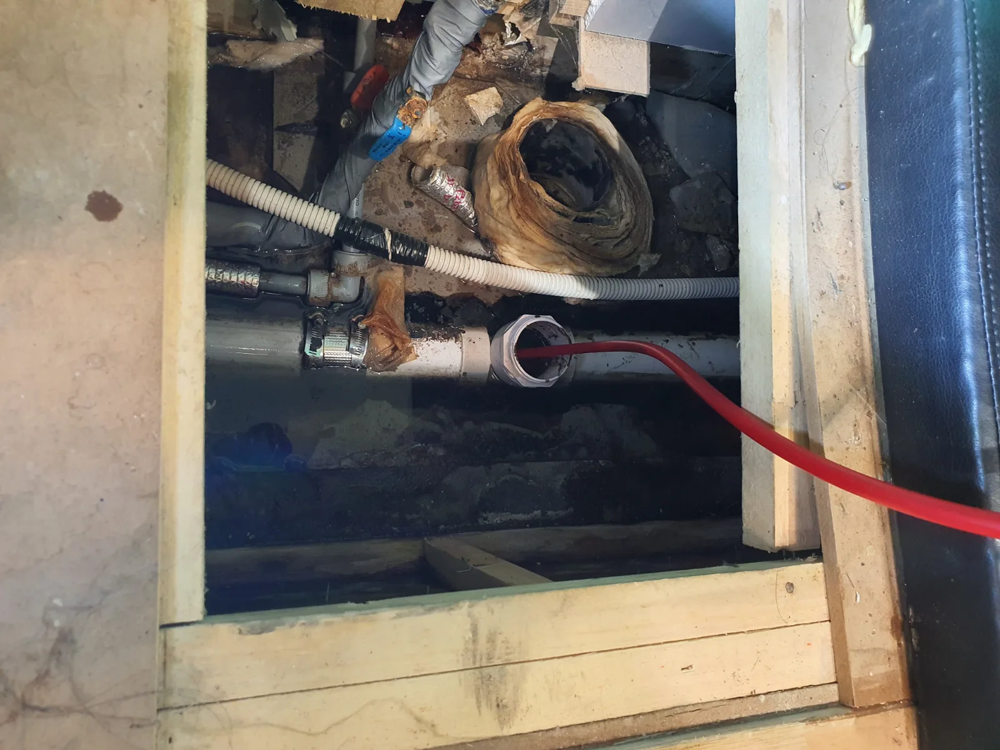

하남시 망월동 하수구막힘, 현장 도착 후 진단
하남시 망월동 커피숍에서 배수가 원활하지 않은 하수구막힘 현장을 점검했습니다. 신라건축설비는 먼저 작업대 아래로 이어지는 배관 구조를 살폈습니다. 미사리 카페 하수구막힘은 배수구 입구만 보고 작업 방향을 정하기보다 여러 연결부에서 나온 물이 어디로 모여 빠지는지 확인하는 과정이 중요합니다. 이번 현장에서도 하부 배관의 진행 방향을 따라 주름관과 정수기 드레인 연결부를 차례로 확인했습니다.
커피숍은 작업대 아래에 배관이 노출되어 있거나, 긴 배수관에 정수기·냉장고·제빙기 등의 배수가 연결되는 경우가 있습니다. 다만 모든 매장의 배관 구조가 같은 것은 아닙니다. 이번에는 사진과 현장 점검으로 확인한 주름관 및 정수기 드레인 연결부를 기준으로 배수 경로를 파악했습니다. 연결부를 따라가며 배관을 살피는 과정은 물이 들어오는 지점과 빠져나가는 방향을 구분하기 위한 점검이었습니다.
하남시 망월동 하수구막힘 작업에서 다음으로 찾은 것은 배관 내부에 접근할 수 있는 소재구였습니다. 소재구는 점검과 청소를 위해 배관 안으로 접근하는 지점입니다. 배수구에서 무작정 작업을 시작하기보다 이 접근 지점을 확보하고 내시경으로 내부 상태를 확인해 막힘 원인과 작업 위치를 좁혀 나갔습니다.
1단계: 증상 확인과 필요한 장비 작업
주름관과 정수기 드레인 연결 상태를 살핀 뒤 소재구를 통해 배관내시경 점검을 진행했습니다. 내부에는 많은 커피 찌꺼기와 기름 성분이 엉겨 걸쭉한 슬러지가 쌓여 있었습니다. 이번 커피숍 하수구막힘은 단단한 물건 하나가 걸린 형태와 달리, 배관 안에 누적된 찌꺼기와 기름 슬러지를 정리해야 하는 상황이었습니다.
커피 찌꺼기는 잘게 보이더라도 계속 배수관으로 들어가 쌓이면 배수에 영향을 줄 수 있습니다. 현장에서는 기름 성분과 섞인 찌꺼기가 걸쭉한 상태를 이루고 있었습니다. 망월동 카페 하수구막힘을 처리할 때에는 눈앞의 막힌 부분을 푸는 것뿐 아니라, 풀어진 슬러지가 이후 어느 방향으로 빠져나갈지도 함께 고려해야 했습니다. 배관이 길게 이어진 만큼 작업 지점과 하류 방향을 연결해서 보는 것이 중요했습니다.
내시경 점검을 바탕으로 샤프트를 투입할 포인트를 정했습니다. 하수구뚫는업체의 작업 과정을 살펴볼 때도 장비 이름만 나열되어 있는지보다 어디를 확인했고 왜 그 지점에서 작업했는지가 중요합니다. 이번에는 소재구를 통해 배관 내부에 접근할 수 있었고, 확인한 막힘 구간을 대상으로 작업을 이어갔습니다.

2단계: 원인 구간 처리와 정상 작동 확인
확인한 소재구에서 샤프트 작업을 진행해 쌓인 커피 찌꺼기와 기름 슬러지를 풀어냈습니다. 이번 미사리 하수구막힘 작업의 핵심은 막힌 지점에 잠깐 물길을 만드는 것으로 끝내지 않는 것이었습니다. 걸쭉한 찌꺼기가 배관 안에 남아 있으면 물이 지나갈 틈이 생긴 것과 잔여물이 충분히 빠져나간 상태를 구분하기 어렵습니다. 따라서 작업 지점에서 슬러지를 풀어내는 과정과 배출되는 흐름을 함께 살폈습니다.
풀어진 커피 슬러지는 출수관·입상관 방향으로 흘려보내며 배출을 진행했습니다. 긴 배관과 여러 연결부가 있는 카페 배수구막힘에서는 입구 주변의 상태만으로 작업 결과를 판단하지 않는 것이 중요합니다. 하남시 망월동 하수구막힘 현장에서도 연결부 확인, 소재구 접근, 내시경 점검을 거쳐 정한 포인트에서 작업하고 하류 쪽으로 찌꺼기가 빠지는 흐름까지 이어서 확인했습니다.
사진은 작업대 하부 연결부와 소재구를 이용한 배관 접근 상황을 보여줍니다. 내시경은 내부 상태를 살펴 작업 위치를 정하는 데 사용했고, 샤프트는 확인한 구간의 찌꺼기와 슬러지를 풀어내는 데 사용했습니다. 배관 구조 파악과 내부 점검이 먼저 이루어졌기 때문에 어디에서 접근해 어느 방향으로 작업을 이어갈지 정할 수 있었습니다.

작업 결과와 재발 방지 안내
샤프트 작업과 슬러지 배출을 진행한 뒤 통수시험에서 물이 시원하게 흘러 내려가는 것을 확인했습니다. 아래 동영상은 이번 망월동 커피숍 하수구막힘 작업 후 배수 상태를 담은 기록입니다. 작업 전에는 커피 찌꺼기와 기름 슬러지가 배관에 쌓여 있었고, 작업 후에는 실제 물 흐름으로 통수 결과를 확인했습니다. 사진으로 확인한 배관 구조와 영상에 담긴 최종 배수 상태를 함께 볼 수 있습니다.
카페 하수구막힘을 줄이려면 커피 찌꺼기를 배수구로 흘려보내지 않고 따로 수거하는 관리가 필요합니다. 하수구가 막혔을 때에는 어느 배수구에서 물이 잘 내려가지 않는지, 주름관과 기기 드레인이 어디에 연결되어 있는지 확인할 수 있는 사진이 상담에 도움이 됩니다. 배수가 느려지는 변화가 생기면 연결부와 이어지는 배관 상태를 점검하고, 물이 잠시 빠진다는 이유만으로 내부의 찌꺼기까지 정리됐다고 판단하지 않는 것이 좋습니다.
하남시 망월동·미사리에서 하수구뚫는업체를 찾으신다면 카페 하부 배관 확인부터 원인 점검, 막힘 제거, 슬러지 배출과 통수 확인까지의 과정을 살펴보세요. 신라건축설비는 이번 하수구막힘 현장을 배관 구조와 작업 위치에 맞춰 처리했습니다. 상담 시 커피숍 배수구의 증상과 연결부 사진을 함께 전달해 주시면 현장 상황을 파악하는 데 도움이 됩니다.
최종 조치: 소재구를 통한 샤프트 작업으로 막힘 구간의 슬러지를 제거하고 출수관·입상관 방향 배출 및 통수 확인
현장 영상
현장 방문 전 확인하는 비용과 작업 범위
신라건축설비는 현장 증상과 배관 구조를 확인한 뒤 필요한 작업과 예상 비용을 안내합니다. 단순 관통으로 해결되는지, 배관내시경·석션·고압세척 또는 추가 장비가 필요한지는 현장 상태에 따라 달라집니다. 출장비와 야간 작업비, 추가 장비 비용이 발생할 수 있는 경우 작업 전에 먼저 설명하고 동의를 받은 범위에서 진행합니다.
업체를 선택할 때 확인할 사항
무조건적인 ‘0원’ 표현보다 실제 작업 범위, 추가 비용 조건, 사용 장비와 사후 대응 기준을 확인하는 것이 중요합니다. 해결되지 않았을 때의 비용 기준과 작업 후 동일 증상 발생 시 점검 범위를 사전에 문의해두면 불필요한 분쟁을 줄일 수 있습니다.
하남시 하수구막힘 자주 묻는 질문
하수구막힘은 왜 반복되나요?
하남시 망월동 현장처럼 커피숍 배수관이 막혀 물이 원활하게 내려가지 않는 배수 불량 증상은 원인이 현장마다 다를 수 있습니다. 배관 내부 기름 슬러지·생활 오염물·스케일이 충분히 제거되지 않았거나 오수관·공용배관 구간에 문제가 있으면 반복될 수 있습니다. 재발 시 막힌 위치와 배관 상태를 함께 확인합니다.
하수구가 역류하거나 물이 안 내려가면 하수구뚫는업체를 불러야 하나요?
바닥 배수구가 역류하거나 여러 배수구에서 동시에 물이 빠지지 않으면 단순 배수구 막힘보다 깊은 배관이나 공용배관 문제일 수 있습니다. 전문 장비로 원인 구간을 확인하는 것이 좋습니다.
여러 배수구가 동시에 막히면 공용배관이나 오수관 문제인가요?
동시에 여러 곳에서 배수 불량과 역류가 발생하면 메인배관·오수관·공용배관을 의심할 수 있지만 건물 구조마다 다릅니다. 배관내시경과 현장 진단으로 구간을 구분합니다.
하수구뚫는업체는 어떤 장비로 작업하나요?
현장에 따라 샤프트, 석션, 배관내시경, 고압세척 장비 등을 사용합니다. 단순 관통이 필요한지 배관 내부 세척까지 필요한지는 오염 상태와 막힘 원인에 따라 판단합니다.
하수구 고압세척은 언제 필요한가요?
기름 슬러지나 배관 내부 오염이 넓게 쌓여 반복 막힘이 생기는 경우 고압세척이 효과적일 수 있습니다. 모든 하수구막힘에 고압세척을 적용하는 것은 아니며 먼저 배관 상태를 확인합니다.
하수구막힘 비용은 어떻게 정해지나요?
막힌 위치, 배관 길이와 구경, 공용배관 여부, 내시경·샤프트·고압세척 등 장비 투입 범위에 따라 달라집니다. 추가 작업이 필요한 경우 진행 전에 범위와 비용을 안내합니다.
하수구막힘 서울·경기 출동지역
신라건축설비는 하남시 망월동 현장을 포함해 서울 25개 구와 경기도 31개 시·군의 배관 문제를 상담합니다. 현장 거리와 기사 배정 상황에 따라 출동 가능 여부를 먼저 안내드립니다.
서울 전 지역
강남구 · 강동구 · 강북구 · 강서구 · 관악구 · 광진구 · 구로구 · 금천구 · 노원구 · 도봉구 · 동대문구 · 동작구 · 마포구 · 서대문구 · 서초구 · 성동구 · 성북구 · 송파구 · 양천구 · 영등포구 · 용산구 · 은평구 · 종로구 · 중구 · 중랑구
경기도 주요 출동지역
수원시 · 용인시 · 고양시 · 화성시 · 성남시 · 부천시 · 남양주시 · 안산시 · 평택시 · 안양시 · 시흥시 · 파주시 · 김포시 · 의정부시 · 광주시 · 하남시 · 광명시 · 군포시 · 양주시 · 오산시 · 이천시 · 안성시 · 구리시 · 의왕시 · 포천시 · 양평군 · 여주시 · 동두천시 · 과천시 · 가평군 · 연천군